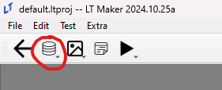
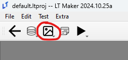

Editors
These pages will contain details pertaining to individual editors.
Contents

Database Editors (found in above)
- Database Editors
- Units Editor
- Teams Editor
- Factions Editor
- Party Editor
- Classes Editor
- Tags Editor
- Game Vars Editor
- Weapon Types Editor
- Items And Skills Editors
- AI Editor
- Terrain and Movement Costs Editors
- Stats Editor
- Equations Editor
- Constants Editor
- Difficulty Modes Editor
- Supports Editor
- Lore Editor
- Raw Data Editor
- Translations Editor

Resource Editors (found in above)